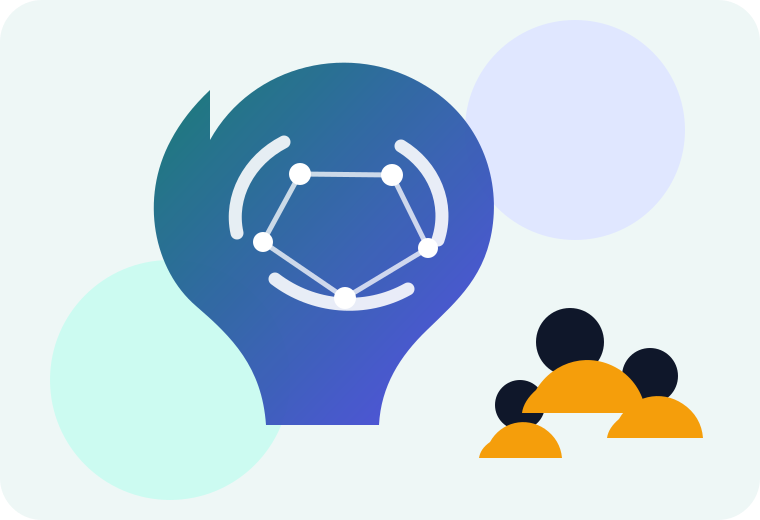
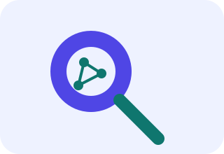
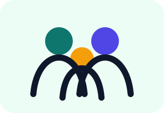
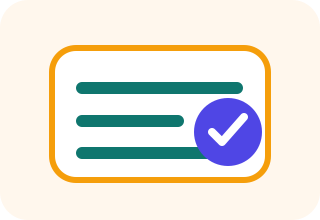

Atualizado em
Dossiê Científico do Autismo
Estado da Arte, História, Evidências, Intervenções, Direitos e Perspectivas — 1911–2026. Um acervo para famílias, profissionais, educadores e pesquisadores.


Evidência científicaEstudos, revisões, diretrizes e limites metodológicos.

Famílias e cuidadoresInformação prática sem promessas de cura ou culpabilização.

Participação e direitosEscola, saúde, autonomia, inclusão e legislação brasileira.